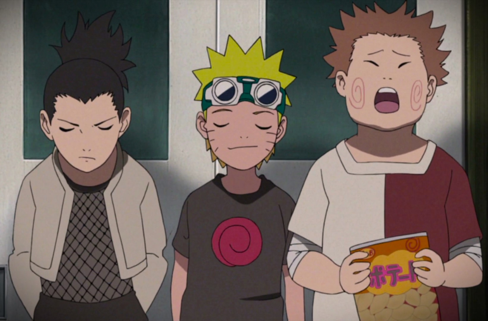

About Shikamaru
Shikamaru Nara is a shinobi of Konohagakure's Nara clan. Though lazy by nature, Shikamaru has a rare intellect that consistently allows him to prevail in combat. The responsibilities that these successes leave him with cause him frequent annoyance, but he gladly accepts them so that he may be of service to his fellow members of Team Asuma, and to prove himself to generations of the past and future.

Shikamaru being lazy by nature.
Shikamaru's Characteristics
- He's a lazy person and his inclination is to do as little work as possible.
- He loves sleeping.
- He has a strong moral compass and dedication to his friends.
Shikamaru's Friends
Even though team 10 members spent a lot of time with him, Shikamaru also has some awesome friends like:
